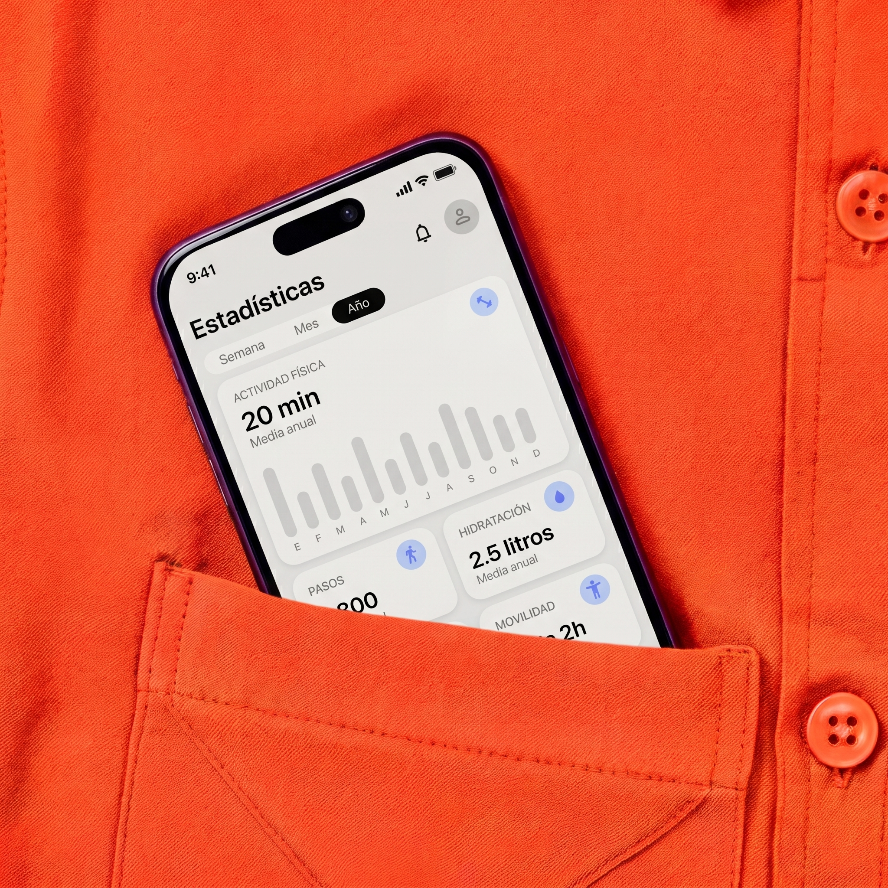
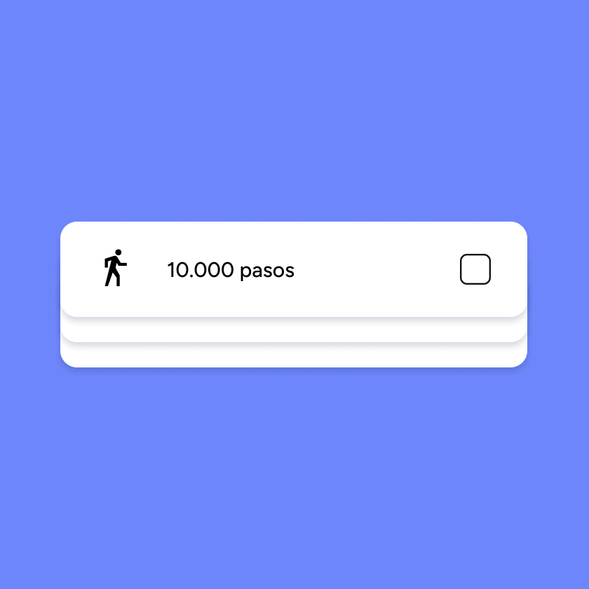
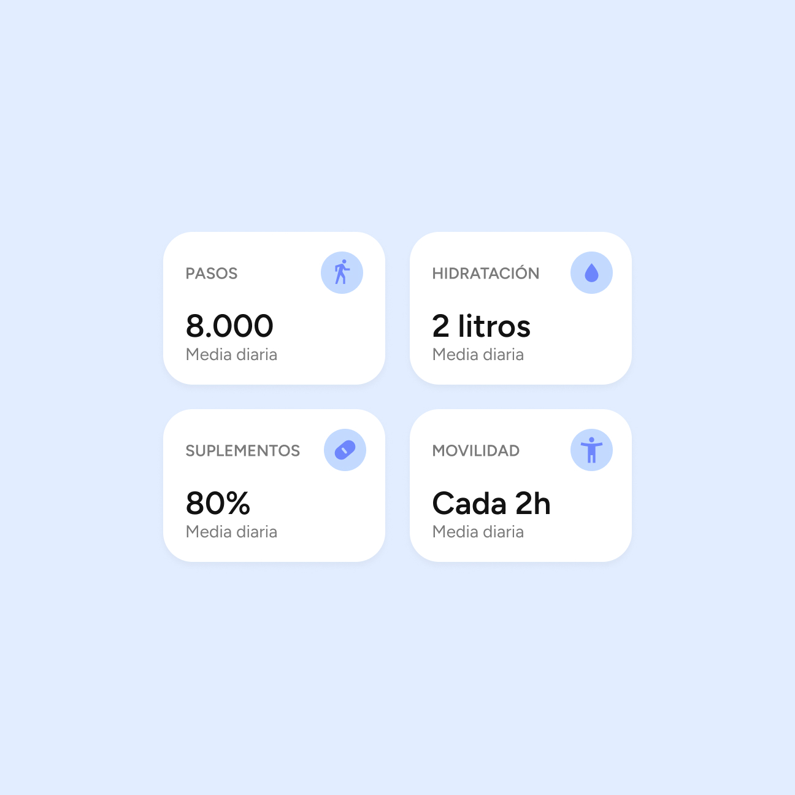
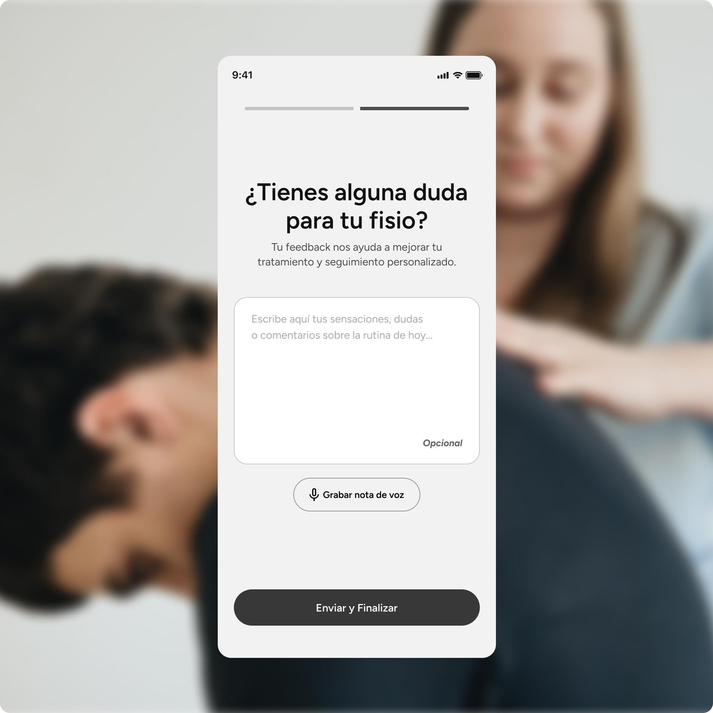

Nura App
A digital solution designed to improve the quality, communication and continuity of physiotherapy treatments. It addresses a clear problem: many patients struggle to stay consistent with their recovery outside the clinic. The tool connects patients and physiotherapists, making communication and treatment follow-up easier while helping patients feel supported throughout their recovery.
- Product Design
- UX/UI
- Digital Branding


Problem
The World Health Organization (WHO) has identified poor adherence to physiotherapy treatments as a major global health challenge. Various studies estimate that treatment adherence in developed countries is around 50%. The causes of poor adherence are diverse, but many patients struggle due to a lack of motivation, the feeling of being alone during their recovery, and the fear of performing exercises incorrectly and getting injured.
Research
This problem needed to be validated through a research phase. To do so, the Double Diamond methodology was followed, beginning with a preliminary phase of Desk Research, Netnography, and the definition of the Research Questions.
Subsequently, 10 users were interviewed, whose insights helped identify several relevant findings. The main challenges that emerged when following a physiotherapy treatment were related to three key aspects: the difficulty of finding a professional they could trust and feel comfortable with, the lack of motivation to maintain the treatment at home and, finally, exercise routines that were provided for home practice in a static and poorly structured format.
These three findings — connection with others, motivation and the need for a more structured treatment — became the main pillars guiding the subsequent decisions throughout the project.

Decisions
Adaptable Exercise Pills: Short sessions that adapt to the time available, allowing each user to progress at their own pace and making every effort count towards their recovery.
Subtle Gamification: Gamification elements that motivate users to stay active daily and visualize their progress.
Inclusivity: Following WCAG AA contrast and accessibility guidelines, while using diverse photography and activities that represent different types of users. People of all ages deserve the opportunity to recover.
Community-Based Recovery: A recovery process supported by the community, with activities tailored to each user’s age, condition and interests, so that the journey feels less isolating and monotonous.


Testing
The application was tested using Maze through an unmoderated test. This phase has made possible to analyze how users actually interacted with the digital solution and identify opportunities for improvement. Based on these behaviors, some iterations were carried out to refine and optimize the experience.

Solution
The result is an accessible and intuitive digital product that supports users throughout their recovery, encourages community-based rehabilitation, facilitates communication with their physiotherapist and enables personalized monitoring of their progress.



